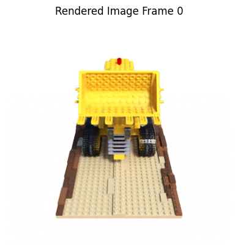

import sys
import os
current_dir = os.path.dirname(os.path.abspath(__file__)) if "__file__" in locals() else os.getcwd()
nerf_code_dir = os.path.abspath(os.path.join(current_dir, '../../../code/NeRF/nerf-pytorch-master'))
if nerf_code_dir not in sys.path:
sys.path.append(nerf_code_dir)
print(f"✅ Added {nerf_code_dir} to sys.path")
import matplotlib.pyplot as plt
import numpy as np
import imageio
import json
import random
import time
import torch
import torch.nn as nn
import torch.nn.functional as F
from tqdm import tqdm, trange
import matplotlib.pyplot as plt
from run_nerf_helpers import *
import matplotlib.pyplot as plt
from IPython.display import display, clear_output
from load_llff import load_llff_data
from load_deepvoxels import load_dv_data
from load_blender import load_blender_data
from load_LINEMOD import load_LINEMOD_data
import configargparse
from run_nerf import batchify, run_network, batchify_rays, render, render_path, create_nerf, raw2outputs, render_rays, config_parser
device = torch.device("cuda" if torch.cuda.is_available() else "cpu")
np.random.seed(0)
DEBUG = False
torch.set_default_tensor_type('torch.cuda.FloatTensor')
torch.set_default_tensor_type('torch.cuda.FloatTensor')
parser = config_parser()
# args = parser.parse_args()
# parser = config_parser()
args = parser.parse_args([
'--config', '/home/xqgao/2025/MIT/code/NeRF/nerf-pytorch-master/configs/lego.yaml'
])
# Load data
K = None
if args.dataset_type == 'llff':
images, poses, bds, render_poses, i_test = load_llff_data(args.datadir, args.factor,
recenter=True, bd_factor=.75,
spherify=args.spherify)
hwf = poses[0,:3,-1]
poses = poses[:,:3,:4]
print('Loaded llff', images.shape, render_poses.shape, hwf, args.datadir)
if not isinstance(i_test, list):
i_test = [i_test]
if args.llffhold > 0:
print('Auto LLFF holdout,', args.llffhold)
i_test = np.arange(images.shape[0])[::args.llffhold]
i_val = i_test
i_train = np.array([i for i in np.arange(int(images.shape[0])) if
(i not in i_test and i not in i_val)])
print('DEFINING BOUNDS')
if args.no_ndc:
near = np.ndarray.min(bds) * .9
far = np.ndarray.max(bds) * 1.
else:
near = 0.
far = 1.
print('NEAR FAR', near, far)
elif args.dataset_type == 'blender':
images, poses, render_poses, hwf, i_split = load_blender_data(args.datadir, args.half_res, args.testskip)
print('Loaded blender', images.shape, render_poses.shape, hwf, args.datadir)
i_train, i_val, i_test = i_split
near = 2.
far = 6.
if args.white_bkgd:
images = images[...,:3]*images[...,-1:] + (1.-images[...,-1:])
else:
images = images[...,:3]
elif args.dataset_type == 'LINEMOD':
images, poses, render_poses, hwf, K, i_split, near, far = load_LINEMOD_data(args.datadir, args.half_res, args.testskip)
print(f'Loaded LINEMOD, images shape: {images.shape}, hwf: {hwf}, K: {K}')
print(f'[CHECK HERE] near: {near}, far: {far}.')
i_train, i_val, i_test = i_split
if args.white_bkgd:
images = images[...,:3]*images[...,-1:] + (1.-images[...,-1:])
else:
images = images[...,:3]
elif args.dataset_type == 'deepvoxels':
images, poses, render_poses, hwf, i_split = load_dv_data(scene=args.shape,
basedir=args.datadir,
testskip=args.testskip)
print('Loaded deepvoxels', images.shape, render_poses.shape, hwf, args.datadir)
i_train, i_val, i_test = i_split
hemi_R = np.mean(np.linalg.norm(poses[:,:3,-1], axis=-1))
near = hemi_R-1.
far = hemi_R+1.
else:
print('Unknown dataset type', args.dataset_type, 'exiting')
return
# Cast intrinsics to right types
H, W, focal = hwf
H, W = int(H), int(W)
hwf = [H, W, focal]
if K is None:
K = np.array([
[focal, 0, 0.5*W],
[0, focal, 0.5*H],
[0, 0, 1]
])
if args.render_test:
render_poses = np.array(poses[i_test])
# Create log dir and copy the config file
basedir = args.basedir
expname = args.expname
os.makedirs(os.path.join(basedir, expname), exist_ok=True)
f = os.path.join(basedir, expname, 'args.txt')
with open(f, 'w') as file:
for arg in sorted(vars(args)):
attr = getattr(args, arg)
file.write('{} = {}\n'.format(arg, attr))
if args.config is not None:
f = os.path.join(basedir, expname, 'config.txt')
with open(f, 'w') as file:
file.write(open(args.config, 'r').read())
# Create nerf model
render_kwargs_train, render_kwargs_test, start, grad_vars, optimizer = create_nerf(args)
global_step = start
bds_dict = {
'near' : near,
'far' : far,
}
render_kwargs_train.update(bds_dict)
render_kwargs_test.update(bds_dict)
# Move testing data to GPU
render_poses = torch.Tensor(render_poses).to(device)
# Short circuit if only rendering out from trained model
print('RENDER ONLY')
with torch.no_grad():
if args.render_test:
# render_test switches to test poses
images = images[i_test]
else:
# Default is smoother render_poses path
images = None
testsavedir = os.path.join(basedir, expname, 'renderonly_{}_{:06d}'.format('test' if args.render_test else 'path', start))
os.makedirs(testsavedir, exist_ok=True)
print('test poses shape', render_poses.shape)
rgbs, _ = render_path(render_poses, hwf, K, args.chunk, render_kwargs_test, gt_imgs=images, savedir=testsavedir, render_factor=args.render_factor)
print('Done rendering', testsavedir)
img = rgbs[0] # shape: (H, W, 3), dtype: float32, range: [0, 1]
plt.imshow(img)
plt.title("Rendered Image Frame 0")
plt.axis("off")
plt.show()
imageio.mimwrite(os.path.join(testsavedir, 'video.mp4'), to8b(rgbs), fps=30, quality=8)
Loaded blender (138, 400, 400, 4) torch.Size([40, 4, 4]) [400, 400, 555.5555155968841] /home/xqgao/2025/MIT/Datasets/NeRF/nerf_synthetic/lego
/home/xqgao/2025/MIT/code/NeRF/nerf-pytorch-master/run_nerf.py:225: FutureWarning: You are using `torch.load` with `weights_only=False` (the current default value), which uses the default pickle module implicitly. It is possible to construct malicious pickle data which will execute arbitrary code during unpickling (See https://github.com/pytorch/pytorch/blob/main/SECURITY.md#untrusted-models for more details). In a future release, the default value for `weights_only` will be flipped to `True`. This limits the functions that could be executed during unpickling. Arbitrary objects will no longer be allowed to be loaded via this mode unless they are explicitly allowlisted by the user via `torch.serialization.add_safe_globals`. We recommend you start setting `weights_only=True` for any use case where you don't have full control of the loaded file. Please open an issue on GitHub for any issues related to this experimental feature.
ckpt = torch.load(ckpt_path)
Found ckpts ['/home/xqgao/2025/MIT/code/NeRF/nerf-pytorch-master/pre_trained_models/lego_test/200000.tar']
Reloading from /home/xqgao/2025/MIT/code/NeRF/nerf-pytorch-master/pre_trained_models/lego_test/200000.tar
Not ndc!
RENDER ONLY
test poses shape torch.Size([40, 4, 4])
0%| | 0/40 [00:00<?, ?it/s]
0 0.003720521926879883
/home/xqgao/anaconda3/envs/inr/lib/python3.12/site-packages/torch/functional.py:534: UserWarning: torch.meshgrid: in an upcoming release, it will be required to pass the indexing argument. (Triggered internally at /opt/conda/conda-bld/pytorch_1729647329220/work/aten/src/ATen/native/TensorShape.cpp:3595.)
return _VF.meshgrid(tensors, **kwargs) # type: ignore[attr-defined]
2%|▎ | 1/40 [00:04<02:59, 4.60s/it]
torch.Size([400, 400, 3]) torch.Size([400, 400])
1 4.598506450653076
5%|▌ | 2/40 [00:09<02:54, 4.60s/it]
2 4.592915058135986
8%|▊ | 3/40 [00:13<02:50, 4.60s/it]
3 4.597219228744507
10%|█ | 4/40 [00:18<02:45, 4.60s/it]
4 4.608144760131836
12%|█▎ | 5/40 [00:23<02:41, 4.61s/it]
5 4.616270542144775
15%|█▌ | 6/40 [00:27<02:36, 4.61s/it]
6 4.621382713317871
18%|█▊ | 7/40 [00:32<02:32, 4.62s/it]
7 4.627427816390991
20%|██ | 8/40 [00:36<02:27, 4.62s/it]
8 4.628061056137085
22%|██▎ | 9/40 [00:41<02:23, 4.62s/it]
9 4.631645679473877
25%|██▌ | 10/40 [00:46<02:18, 4.63s/it]
10 4.637068033218384
28%|██▊ | 11/40 [00:50<02:14, 4.63s/it]
11 4.635892868041992
30%|███ | 12/40 [00:55<02:09, 4.63s/it]
12 4.641714096069336
32%|███▎ | 13/40 [01:00<02:05, 4.64s/it]
13 4.64192795753479
35%|███▌ | 14/40 [01:04<02:00, 4.64s/it]
14 4.65056586265564
38%|███▊ | 15/40 [01:09<01:56, 4.65s/it]
15 4.6586198806762695
40%|████ | 16/40 [01:14<01:51, 4.65s/it]
16 4.655009508132935
42%|████▎ | 17/40 [01:18<01:46, 4.65s/it]
17 4.658567905426025
45%|████▌ | 18/40 [01:23<01:42, 4.65s/it]
18 4.66052770614624
48%|████▊ | 19/40 [01:28<01:37, 4.66s/it]
19 4.661770343780518
50%|█████ | 20/40 [01:32<01:33, 4.66s/it]
20 4.6580963134765625
52%|█████▎ | 21/40 [01:37<01:28, 4.66s/it]
21 4.662529468536377
55%|█████▌ | 22/40 [01:42<01:23, 4.66s/it]
22 4.662933349609375
57%|█████▊ | 23/40 [01:46<01:19, 4.66s/it]
23 4.6700005531311035
60%|██████ | 24/40 [01:51<01:14, 4.67s/it]
24 4.672757863998413
62%|██████▎ | 25/40 [01:56<01:10, 4.67s/it]
25 4.671373605728149
65%|██████▌ | 26/40 [02:00<01:05, 4.67s/it]
26 4.674701690673828
68%|██████▊ | 27/40 [02:05<01:00, 4.67s/it]
27 4.67028284072876
70%|███████ | 28/40 [02:10<00:56, 4.67s/it]
28 4.675526142120361
72%|███████▎ | 29/40 [02:14<00:51, 4.67s/it]
29 4.679644823074341
75%|███████▌ | 30/40 [02:19<00:46, 4.68s/it]
30 4.680464029312134
78%|███████▊ | 31/40 [02:24<00:42, 4.68s/it]
31 4.681898832321167
80%|████████ | 32/40 [02:28<00:37, 4.68s/it]
32 4.676936149597168
82%|████████▎ | 33/40 [02:33<00:32, 4.68s/it]
33 4.678430557250977
85%|████████▌ | 34/40 [02:38<00:28, 4.68s/it]
34 4.6854894161224365
88%|████████▊ | 35/40 [02:42<00:23, 4.68s/it]
35 4.684006929397583
90%|█████████ | 36/40 [02:47<00:18, 4.68s/it]
36 4.685177326202393
92%|█████████▎| 37/40 [02:52<00:14, 4.68s/it]
37 4.685378551483154
95%|█████████▌| 38/40 [02:56<00:09, 4.69s/it]
38 4.690970182418823
98%|█████████▊| 39/40 [03:01<00:04, 4.68s/it]
39 4.682691812515259
100%|██████████| 40/40 [03:06<00:00, 4.66s/it]
Clipping input data to the valid range for imshow with RGB data ([0..1] for floats or [0..255] for integers).
Done rendering /home/xqgao/2025/MIT/code/NeRF/nerf-pytorch-master/logs/blender_paper_lego/renderonly_path_200000
